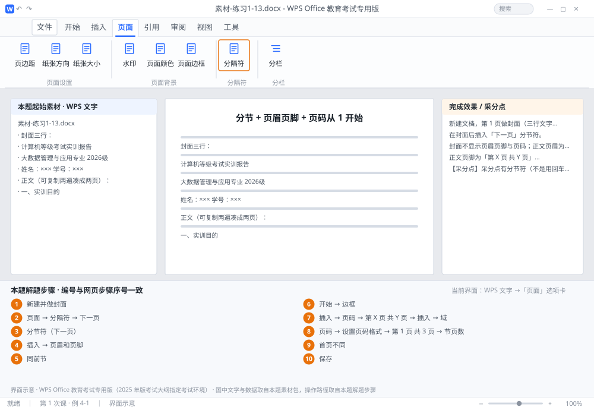

完成比对文档 · 例 4-1
分节 + 页眉页脚 + 页码从 1 开始 ｜ 第 1 次课 / WPS 文字 ｜ 网页：入门实操课.html ｜ 考试环境：WPS Office 教育考试专用版（2025 年版考试大纲指定考试环境）
用途 本页按修订后的题目要求与解题步骤生成，是交卷自查的结果基准：
逐项列出每一步应出现的可复核结果，配合模拟操作截图与解题结果文件使用。
它不是素材包的一部分，不会预置答案动作；起始素材仍从本题素材包下载。
一、本题起始素材包
目录：练习素材/练习1-13-分节与页眉页脚/ ｜
下载包：练习素材/下载/练习1-13-分节与页眉页脚.zip
二、题目要求
- 新建文档，第 1 页做封面（三行文字：标题、专业班级、姓名学号），第 2 页起为正文（约两页文字，可用素材重复录入）。
- 在封面后插入「下一页」分节符。
- 封面不显示页眉页脚与页码；正文页眉为「大数据管理与应用专业 实训报告」（宋体五号、居中、加下边框线）。
- 正文页脚为「第 X 页 共 Y 页」（宋体小五、居中），且页码从 1 开始。
- 保存为 学号-姓名-练习4-1.docx。
三、解题步骤（编号与下方核对表、截图编号一致）
- 新建并做封面。Ctrl+N 新建，录入封面三行；用 Enter 或 Shift+Enter 把它们排在页面中部（可用段前间距，别连打回车堆到中间）。
- 插入分节符。光标放在封面最后一行末尾 →「页面」→「分隔符」→ 选 「下一页」分节符。此时光标跳到新的一页，文档变成 2 节。
- 确认分节成功。打开 ¶ 显示，封面末尾出现一条标着「分节符（下一页）」的双虚线。没有它，后面所有设置都做不成。
- 进入页眉编辑。在正文第 1 页顶部双击空白处（或「插入」→「页眉和页脚」），页面变灰、出现页眉虚线框。
- 断开"同前节"（最关键一步）。页眉页脚工具条上找到「同前节」并点掉，让它不再处于按下状态。这样正文页眉才不会和封面共用。
- 写页眉并加下框线。输入「大数据管理与应用专业 实训报告」→ 宋体 五号、居中 → 保持选中 →「开始」→「边框」下拉 → 选 下框线。
- 写页脚与页码。光标移到页脚区 →「插入」→「页码」→ 选「第 X 页 共 Y 页」样式 → 宋体 小五、居中。（若没有现成样式，就手打"第 页 共 页"，再用「插入 → 域」分别插入 Page 与 NumPages。）
- 设起始页码。仍在本节，点「页码」→「设置页码格式」→ 起始页码输 1 → 确定。正文首页页脚应显示「第 1 页 共 3 页」——Y 是全文总页数（含封面），这是"共 Y 页"的正常表现；若题目要求只统计正文页数，就把 Y 换成「节页数」域（SECTIONPAGES）。
- 清理封面。回到第 1 页的页眉/页脚区（此时已断开链接），把内容删空，页码也删掉；或勾选「首页不同」。双击正文区退出编辑。
- 保存。Ctrl+S → 另存为 学号-姓名-练习4-1.docx。翻页检查：封面无页眉页码，正文页眉有下框线、页码从 1 开始。
四、完成效果 / 采分点
采分点有分节符（不是用回车顶到下一页） · 「同前节」已断开 · 页眉字体字号与下框线 · 页脚"第X页 共Y页" · 正文起始页码为 1
五、逐项完成核对表
| 步骤 | 关键操作路径 | 应出现的结果（可复核） |
|---|
| 1 | 新建并做封面 | 新建并做封面 |
| 2 | 插入分节符 | 「页面」、「分隔符」、「下一页」 |
| 3 | 确认分节成功 | 「分节符（下一页）」 |
| 4 | 进入页眉编辑 | 1 页、「插入」、「页眉和页脚」 |
| 5 | 断开"同前节"（最关键一步） | 「同前节」 |
| 6 | 写页眉并加下框线 | 「开始」、「边框」 |
| 7 | 写页脚与页码 | 「插入」、「页码」、「第 X 页 共 Y 页」、「插入 → 域」 |
| 8 | 设起始页码 | 「页码」、「设置页码格式」、「第 1 页 共 3 页」、「节页数」 |
| 9 | 清理封面 | 1 页、「首页不同」 |
| 10 | 保存 | 学号-姓名-练习4-1.docx |
六、模拟操作截图

界面示意 · WPS Office 教育考试专用版 · 橙色编号与本题解题步骤序号一致；
图中文字与数据取自本题素材包，功能入口取自本题解题步骤。
核对方法：按网页解题步骤完成并另存自己的成稿后，逐行比对本表第 3 列的
参数、公式、区域、文件名与对象数量；再对照网页「完成效果 / 采分点」检查版式是否一致。